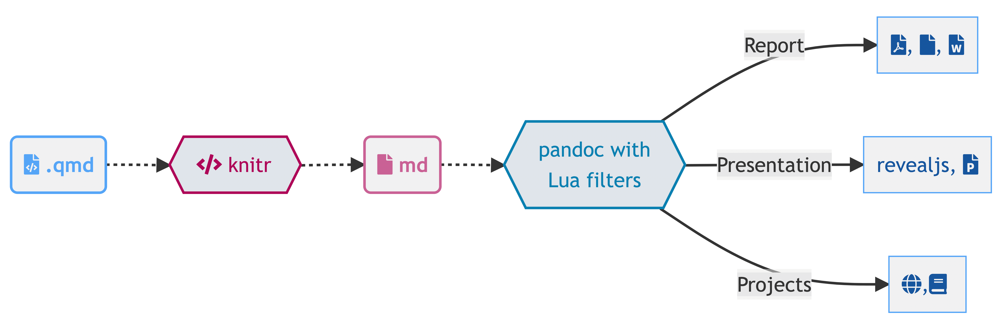

Quarto

문서 컴파일러 1
Quarto 는 Pandoc에 기반한 오픈소스 과학기술 출판시스템이다. 하지만 특정 언어에 종속되지 않고 R, 파이썬, 쥴리아, 자바스크립트(Observable JS) 를 지원하고 있으며 이를 통해 다음 출판 저작물 작성이 가능하다.
크게 세가지 부분에 대해 출판시스템에 대한 고민이 필요하다.
- 콘텐츠(Content): 저작과 관련된 문서 내용
- 디자인(Design): 출판 결과물에 대한 외양(Look and Feel)
- 형식(Format): 출판물 최종 산출물
Quarto 는 Literate Programming System 으로 다양한 언어를 지원하고 다양한 출판결과물을 연결시키는 핵심 엔진으로 Pandoc 을 사용한다.
| Computations | 문서 저작 | 출력물 |
|---|---|---|
| Python, R, Julia, Observable JS | Pandoc, 마크다운 (Markdown) | 문서, 웹사이트, PPT, 책, 블로그등 |
좀더 구체적으로 전문적인 출판을 위해서 문서저작에 다양한 기능과 함께 출판 산출물을 지원한다.
- 문서저작(pandoc): 마크다운, 수식, 인용, 서지관리, 콜아웃(callout), 고급 layout 등
- 출판산출물: 고품질 기사(article), 보고서, PPT, 웹사이트, 블로그, (HTML, PDF, MS 워드, ePub 등) 전자책
Single Sourcing 출판저작
데이터 사이언스 출판저작에 다소 차이는 있지만 출판에 대한 대체적인 방식은 유사할 것으로 보인다. 즉, Single Sourcing 을 콘텐츠 저작, 디자인, 최종 출판물 관리까지 일원화되어 자동화되어 체계적으로 관리된다면 중복되는 낭비는 물론 재현가능성도 높여 과학기술 출판저작물로 가장 이상적으로 간주되고 있다.


설치방법
quarto 웹사이트에서 Quarto CLI 엔진을 설치한다. 통합개발도구(IDE)를 설치한다. 그리고 나서 literate programming 방식으로 저작을 시작한다.
작업흐름
기존 R .Rmd, 파이썬 .ipynb 확장자를 갖는 작업흐름이 .qmd 파일로 단일화되는 것이 가장 큰 특징이다. 따라서 마크다운으로 콘텐츠를 작성하고 프로그래밍 코드를 R, 파이썬, 자바스크립트, 쥴리아 로 작성하게 되면 자동으로 계산을 수행하고 결과물을 마크다운으로 변환시키기 때문에 후속 작업을 신경쓰지 않고 원하는 결과물을 얻을 수 있는 장점이 있다.




주요 기능
| Feature | R Markdown | Quarto |
|---|---|---|
| Basic Formats | ||
| Beamer | ||
| PowerPoint | ||
| HTML Slides | ||
| Advanced Layout | ||
| Cross References | ||
| Websites & Blogs | ||
| Books | Quarto Books | |
| Interactivity | Shiny Documents | Quarto Interactive Documents |
| Paged HTML | pagedown | Summer 2022 |
| Journal Articles | rticles | Summer 2022 |
| Dashboards | flexdashboard | | Fall 2022 |